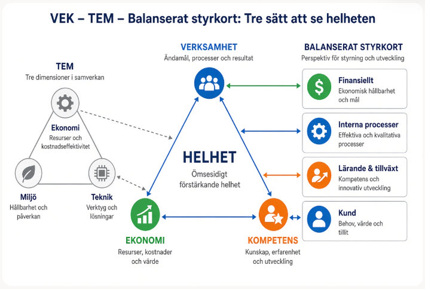

Hur ser man en organisation så att man kan styra, planera och följa upp den? VEK, TEM och balanserat styrkort ger tre svar. Svaren liknar varandra mer än namnen antyder.
Av Kent Lundgren. Uppgifterna är hämtade ur källorna längst ned och har jämförts med källornas text. Ingen utomstående har granskat sidan. Kontrollera mot källan innan något återges. Samma ämne finns också i bloggen och som LinkedIn-artikel.
Fyra poänger. Resten av sidan visar var de kommer ifrån.
Alla vill se mer än pengarna
Balanserat styrkort lade till tre perspektiv till de finansiella: kunder, interna processer samt lärande och tillväxt (Kaplan och Norton, 2007). Polismyndigheten planerar enligt VEK (verksamhet, ekonomi och kompetens, (Ekonomistyrningsverket, 2024, avsnitt 2.1)). TEM (teknik, ekonomi och miljö) är en tvärvetenskaplig stiftelse som arbetar med just de tre. Olika ord, samma poäng: man kan inte styra enbart på ekonomi.
Modeller är mode
Forskaren Eric Abrahamson kallar det managementmode: konsulter, gurus, affärspress och handelshögskolor tävlar om att lansera nästa modell (Abrahamson, 1996). När kvalitetscirklar var på modet på 1980-talet hade över 80 procent av de Fortune 500-företag som infört dem övergett dem 1987, enligt en enkät som Abrahamson refererar.
Offentligt och privat: samma tänk, olika överst
Verktygen går att använda i båda. Det som byter plats är vad som står överst: i vinstdrivande företag är det finansiella ett tydligt mål, i offentlig verksamhet är uppdraget målet och ekonomin en ram (Kaplan, 2001, s. 353–354). Forskningen om hur stor skillnaden är är begränsad: i en genomgång av 34 studier fick bara tre av 13 hypoteser stöd av en majoritet (Boyne, 2002).
Frågorna är desamma
Vart ska vi? Hur når vi dit? Hur går det? Modellerna skiljer sig i hur många perspektiv de tittar genom. Uppdelningen i just de tre stegen är min egen, och Diagram 2 visar den.
Jag känner igen både TEM och balanserat styrkort sedan tidigare, och sidan utgår från hur de förhåller sig till VEK. Diagram 1 är min bild av det.
Diagram 1. VEK, TEM och balanserat styrkort: tre sätt att se helheten (min egen sammanställning).

Kopplingen mellan de tre är min egen. De källor om VEK som har lästs gör den inte. Pilarna visar likheter, inte att modellerna bygger på varandra.
Statlig myndighetPlaneringssätt
VEK
VEK är Polismyndighetens sätt att hålla ihop verksamhet, ekonomi och kompetens. De tre ses som varandras förutsättningar och beaktas samtidigt i planering, genomförande och uppföljning. Strategisk verksamhetsplan, budgetramar och kompetensförsörjningsplan tas fram i en gemensam process inför varje budgetår (Ekonomistyrningsverket, 2024, avsnitt 2.1).
Kompetensdelen kom sist: den integrerades i planeringen 2022, och kraven på bemannings- och rekryteringsplaner kom inför 2024 (Ekonomistyrningsverket, 2024, avsnitt 2.4, 2.4.2, 2.6 och 4.2.2). Ansvaret för budget, personal och kompetensförsörjning är delegerat till chefer långt ut i organisationen (Statskontoret, u.å.).
Lund och MalmöTvärvetenskap
TEM
TEM startade 1981 som ett tvärvetenskapligt projekt vid Lunds universitet och blev en stiftelse 1984. Förkortningen betydde först Transportteknik, Ekonomi och Miljö och betyder numera Teknik, Ekonomi och Miljö (Wikipedia, u.å.b).
Min koppling till TEM går via IIIEE (Internationella miljöinstitutet) i Lund, där jag licentierade 1998 inom miljöekonomi, med en avhandling om förnyelsebara energibärares konkurrenskraft (Lundgren, 1998). Institutet har till uppgift att bedriva forskning och utbildning inom miljöområdet, med tyngdpunkt på industriell miljöekonomi (Sverige, 1994, 2 §), och beskriver sig som ett internationellt och tvärvetenskapligt centrum vid Lunds universitet (Lunds universitet, u.å.b). I universitetets forskningsportal är avhandlingen klassad som miljöteknik. Så ser jag det: på IIIEE är miljöfrågan alltid tillsammans med teknik och ekonomi, och det är samma tanke som TEM.
Jag har inte hittat någon formell koppling mellan TEM och IIIEE. Det som finns är att båda hör till Lunds universitet, TEM som anknuten stiftelse och IIIEE som centrum (Lunds universitet, u.å.a), och att båda arbetar tvärvetenskapligt med teknik, ekonomi och miljö. Kopplingen är alltså min egen.
Min bedömning: TEM är ett synsätt snarare än en styrmodell med mätetal. Tanken är ändå densamma: tre dimensioner som måste hänga ihop.
1992Mät- och styrsystem
Balanserat styrkort
Kaplan och Norton lanserade styrkortet 1992. Utgångspunkten var att traditionella finansiella mått kan ge missvisande signaler för ständig förbättring och innovation (Kaplan och Norton, 1992). Styrkortet kompletterade de finansiella måtten med tre perspektiv: kunder, interna processer samt lärande och tillväxt. Det ersatte inte de finansiella måtten, det kompletterade dem (Kaplan och Norton, 2007).
Tabell 1. Hur VEK, balanserat styrkort och TEM hänger ihop (min jämförelse)
VEK
Balanserat styrkort
TEM
Vad det är
Ett sätt att planera, genomföra och följa upp i en statlig myndighet
Ett mät- och styrsystem som kompletterar finansiella mått
Ett tvärvetenskapligt synsätt på teknik, ekonomi och miljö
Pengarna
Ekonomi
Finansiellt
Ekonomi
Det som görs
Verksamhet
Interna processer och kund
Ingen direkt motsvarighet
Förmågan att klara det
Kompetens
Lärande och tillväxt
Ingen direkt motsvarighet
Det som bara finns i en
Kompetensen som en egen, jämbördig del
Kunden
Miljön
Raderna är min tolkning. Ingen av källorna gör jämförelsen, och TEM:s delar motsvarar inte VEK:s eller styrkortets perspektiv rakt av.
Direktlänk till modellen:https://kentlundgren.github.io/Grok/aktuellt/VEK_TEM/#verksamhetsringen (hash-tecknet # i webbadressen hoppar hit).
Min utvecklade variant av balanserat styrkort börjar där verksamheten faktiskt sker: vad händer här? Därefter går ringen medurs via lärande och omvärld till det finansiella utfallet som historia i siffror. I centrum sitter verksamhetscontrollerfunktionen: att processleda planering och uppföljning av mål och indikatorer, och att ha koll på intern kontroll och risk när det inte går som tänkt.
Klassiskt styrkort beskriver ofta en orsakskedja från lärande mot ekonomi. Här är ordningen medvetet vänd: processer och kultur först, pengarna sist. Det ligger nära hur jag läser VEK i offentlig verksamhet, men modellen är min egen sammanställning och inte Polismyndighetens eller Kaplan och Nortons.
Diagram 4. Verksamhetsringen. Klicka eller håll över en ruta för förklaring. Medurs 1–4; streckad pil = lärdom tillbaka till verksamheten.
Modellen och diagrammet är min egen sammanställning, inspirerad av handskissen i projektmappen Bilder/eget_balanserat_styrkort.jpg. Samma figur som SVG: Bilder/verksamhetsringen.svg.
Kopplingen till VEK (verksamhet, kompetens, ekonomi) och till Kaplan och Nortons perspektiv är min tolkning. Ingen av källorna beskriver den här ringordningen.
Jag delar upp arbetet i tre steg: styrning (vart ska vi?), planering (hur når vi dit?) och uppföljning (hur går det?). Det är min uppdelning, inte en modell som Polisen eller Kaplan och Norton har. Den hjälper mig att se vad varje perspektiv betyder i varje steg. Diagram 2 visar det för VEK, med exempel från Polismyndigheten.
Diagram 2. VEK genom styrning, planering och uppföljning. Klicka eller håll över en ruta för att se källan.
Cellerna bygger på (Ekonomistyrningsverket, 2024). Uppdelningen i styrning, planering och uppföljning och raden "Så har jag arbetat" är min sammanställning.
Planering och uppföljning bildar ett årshjul: planeringen inleds året innan, utifrån nationella planeringsanvisningar, och uppföljningen under året blir underlag till ny planering och nya beslut (Ekonomistyrningsverket, 2024, avsnitt 4.2.2).
Jag har lagt märke till ett mönster: en modell blir populär, intresset svalnar, och konsulter och forskare har redan en ny modell att erbjuda. Det är inte bara en känsla. Forskningen har ett namn för det: managementmode.
Abrahamson (Abrahamson, 1996) beskriver modefenomenet som en tävling. Konsultföretag, gurus, affärspress och handelshögskolor ska känna av vad ledare vill ha, formulera ett språk som visar att tekniken är framkant och sprida det före konkurrenterna. De tvingar alltså inte på chefer idéer: de försöker känna av vad ledare är på väg att vilja ha.
Kvalitetscirklar är exemplet. Under 1980–1982 rapporterade nästan en tredjedel av de amerikanska organisationerna med fler än 500 anställda att de infört dem. Enligt en enkät hade över 80 procent av de Fortune 500-företag som infört dem på 1980-talet övergett dem 1987.
Fenomenet är gammalt. Tekniker har vunnit och förlorat popularitet sedan sekelskiftet, och antalet artiklar om medarbetarägda aktier svängde tre gånger mellan 1914 och 1986.
Min egen erfarenhet. Jag har själv mött kvalitetscirklarna när de var på modet. Mitt första fasta jobb var på Kalmar Verkstad, KVAB, ett verkstadsindustriföretag i Kalmar (Wikipedia, u.å.a), där jag arbetade 1986–1994, med studieledighet från hösten 1988 till 1994. Åren 1986–1988 var kvalitet och kvalitetscirklar viktigt. Olika roller och personer, till exempel inköp, konstruktion och produktion, fördes samman tidigt för att se problem och åtgärda utmaningar tidigt, eftersom det är dyrare och besvärligare att åtgärda dem senare i förädlingskedjan. Det är bättre att vara överens mellan avdelningarna om vad som ska göras, och att vara det tidigt. Jag gick interna kurser om kvalitet och kvalitetscirklar.
Det stämmer med bilden i litteraturen: i början av 1980-talet fick arbetssättet stor spridning i Europa, och i Sverige kom det att kallas kvalitetscirklar. De blev inte så framgångsrika, och orsaken var enligt Klefsjö och Sandholm att företagens högsta ledning inte ägnade sig åt kvalitetsfrågor lika engagerat som japanska företagsledare (Klefsjö och Sandholm, 2004).
Jag har inte hittat någon källa som kopplar just KVAB till kvalitetscirklar. Min erfarenhet är därför en egen iakttagelse och inte en källuppgift.
Det betyder inte att modellerna är fel. Det säger bara hur de sprids. Min läsning är att kärnan finns kvar när modet har gått över.
Diagram 3. Några modeller och uppslag för styrning och uppföljning, med årtal. Urvalet är mitt och gör inte anspråk på att vara fullständigt.
1980-talet
Kvalitetscirklar
Nästan var tredje amerikansk organisation med över 500 anställda rapporterade att de införde dem 1980–1982. År 1987 hade över 80 procent av Fortune 500-företagen som infört dem övergett dem. (Abrahamson, 1996) I Sverige fick arbetssättet stor spridning i början av 1980-talet. (Klefsjö och Sandholm, 2004)
Kompetensplaneringen integreras i Polismyndighetens planerings- och uppföljningsprocess. Själva VEK-perspektivet är äldre, men ESV anger inget startår. (Ekonomistyrningsverket, 2024, avsnitt 2.4)
Metodstödet tas fram 2023 och uppdateras inför 2024, då kraven på bemannings- och rekryteringsplaner börjar gälla. (Ekonomistyrningsverket, 2024, avsnitt 2.4.1, 2.4.2 och 4.2.2)
Ett av de nyare uppslagen är tillitsbaserad styrning. Tillitsdelegationen lyfter fram att forskningen traditionellt har skilt på marknad (konkurrens) och hierarki (auktoritet, reglering) som sätt att styra prestationer, och att tillit kan förstås som en tredje princip (SOU 2018:47, kapitel 4). Det är en annan sorts poäng än ett fjärde perspektiv: den handlar om hur styrningen verkar, inte om vad man tittar på.
Kort svar: i princip ja. Flera perspektiv, mål, plan och uppföljning fungerar i båda. Det som skiljer är vad som står överst och hur man läser ordet kund. Tabell 2 samlar vad källorna säger.
Tabell 2. Samma tankemodell, olika tyngdpunkt: vad källorna säger
Fråga
Vinstdrivande företag
Ideella organisationer
Svensk statlig myndighet
Vad är det yttersta målet?
Det finansiella ger ett tydligt långsiktigt mål, till exempel lönsamhet eller ägarnas avkastning. (Kaplan, 2001, s. 354)
Uppdraget: hur effektivt man möter målgruppernas behov. Det finansiella är en ram som möjliggör eller begränsar, sällan det främsta målet. (Kaplan, 2001, s. 353–354)
Verksamhetskraven: verksamheten ska bedrivas effektivt, enligt gällande rätt, med god hushållning med statens medel och med en tillförlitlig och rättvisande redovisning. (Polismyndigheten, 2026, avsnitt 16)
VEK: verksamhet, ekonomi och kompetens, sammanhållna i planering och uppföljning. (Ekonomistyrningsverket, 2024, avsnitt 2.1)
Hur stor är skillnaden mellan sektorerna?
I en genomgång av 34 empiriska studier fick bara tre av 13 hypoteser om skillnader stöd av en majoritet: offentliga organisationer är mer byråkratiska, och offentliga chefer är mindre materialistiska och mindre bundna till organisationen. Det mesta av underlaget bygger på smala mått och tar inte hänsyn till andra förklaringar, så det är oklart om skillnaderna är över- eller underskattade. (Boyne, 2002)
Min slutsats, inte en källuppgift: samma tankemodell fungerar i båda. Det som byts ut är vad som står överst och vad "kund" betyder. Skillnaden är en gradfråga, och forskningsläget är begränsat, så jag skulle inte påstå att modellerna måste vara olika. Däremot behöver man vara tydlig med vad som är målet och vad som är ramen.
Poängen med balanserat styrkort för ideella organisationer är just flytten: för en vinstdrivande verksamhet ger det finansiella ett tydligt långsiktigt mål, men för en ideell är det en ram (Kaplan, 2001, s. 354). I VEK återkommer samma tanke på ett annat sätt: ekonomin är ett av tre perspektiv och inte facit.
Uppgifterna är hämtade ur källorna nedan och har jämförts med källornas text. Ingen utomstående har granskat sidan. Det står vid varje källa vad som är läst i originaltexten och vad som bara är sett delvis, och uppgiftskontrollen visar uppgift för uppgift var i källan den står. Kontrollera mot källan innan något återges. Samma ämne finns också som blogginlägg (Lundgren, 2026a) och som LinkedIn-artikel (Lundgren, 2026b).
Abrahamson, E. (1996) Management fashion. Academy of Management Review, 21(1), s. 254–285. Tillgänglig på: https://www.jstor.org/stable/258636 (Hämtad: 16 oktober 2026). (Läst i originaltexten. Kvalitetscirklar, mode i management.)
Boyne, G. A. (2002) Public and private management: what's the difference? Journal of Management Studies, 39(1), s. 97–122. Tillgänglig på: https://doi.org/10.1111/1467-6486.00284 (Hämtad: 16 oktober 2026). (Bara sammanfattningen är läst i originaltexten, inte hela artikeln.)
Kaplan, R. S. (2001) Strategic performance measurement and management in nonprofit organizations. Nonprofit Management & Leadership, 11(3), s. 353–370. Tillgänglig på: https://doi.org/10.1002/nml.11308 (Hämtad: 16 oktober 2026). (Läst i originaltexten via en kopia av artikelns inledning.)
Kaplan, R. S. och Norton, D. P. (1992) The balanced scorecard: measures that drive performance. Harvard Business Review, januari–februari. Tillgänglig på: https://hbr.org/1992/01/the-balanced-scorecard-measures-that-drive-performance-2 (Hämtad: 16 oktober 2026). (Bara inledningen på sidan är läst, artikeln är bakom betalvägg.)
Lundgren, K. (1998) Förnyelsebara energibärares nuvarande och framtida konkurrenskraft: föreställningar om konkurrenskraft. Licentiatavhandling, The International Institute for Industrial Environmental Economics, Lunds universitet. Lund. ISBN 91-88902-05-6. Tillgänglig på: https://portal.research.lu.se/en/publications/f%C3%B6rnyelsebara-energib%C3%A4rares-nuvarande-och-framtida-konkurrenskraf/ (Hämtad: 16 oktober 2026). (Läst i originaltexten: publikationsposten med sammanfattning, ämnesklassning och datum. Själva avhandlingen är inte läst här.)
Lundgren, K. (2026a) Samma fråga, nya modeller. Controller, lärare och coach utan gränser reflekterar (blogg), 16 oktober. Tillgänglig på: https://controllerutangranser.wordpress.com/2026/10/16/samma-fraga-nya-modeller/ (Hämtad: 16 oktober 2026). (Samma ämne som blogginlägg. Titel, författare och datum är kontrollerade mot sidan.)
Lunds universitet (u.å.a) TEM. LUCAT, Lunds universitets register över organisationer, kategorin Stiftelser och övriga anknutna verksamheter. Tillgänglig på: https://www.lu.se/lucat/group/v1000724 (Hämtad: 16 oktober 2026). (Läst i originaltexten. Stiftelsen TEM:s målsättning.)
Lunds universitet (u.å.b) Internationella miljöinstitutet. LUCAT, Lunds universitets register över organisationer. Tillgänglig på: https://www.lu.se/lucat/group/v1000927 (Hämtad: 16 oktober 2026). (Läst i originaltexten. IIIEE som internationellt och tvärvetenskapligt centrum.)
Statens offentliga utredningar (2018) Med tillit växer handlingsutrymmet. Slutbetänkande av Tillitsdelegationen. SOU 2018:47, kapitel 4. Tillgänglig på: https://data.riksdagen.se/dokument/H6B347.html (Hämtad: 16 oktober 2026). (Läst i originaltexten. Tillitsbaserad styrning och ledning.)
Sverige (1994) Förordning (1994:1173) om Internationella institutet för industriell miljöekonomi vid Lunds universitet, 1–2 §§. Tillgänglig på: https://lagen.nu/1994:1173 (Hämtad: 16 oktober 2026). (Läst i originaltexten. Institutets uppgift.)
Wikipedia (u.å.a) Kalmar Verkstad. Tillgänglig på: https://sv.wikipedia.org/wiki/Kalmar_Verkstad (Hämtad: 16 oktober 2026). (Läst i originaltexten. Företaget i korthet. Artikeln nämner inte kvalitetscirklar.)
Wikipedia (u.å.b) Stiftelsen TEM. Tillgänglig på: https://sv.wikipedia.org/wiki/Stiftelsen_TEM (Hämtad: 16 oktober 2026). (Läst i originaltexten. Artikeln anger TEM:s egen historiksida som källa, och TEM:s webbplats gick inte att öppna för kontroll.)
Det som inte har kunnat kontrolleras: TEM:s egen webbplats gick inte att öppna, så uppgifterna om TEM bygger på Wikipedia. Hela Boyne-artikeln och hela artikeln av Kaplan och Norton från 1992 är inte lästa, bara sammanfattningarna. Management by objectives (Drucker) och OKR finns inte med i tidslinjen, eftersom de inte har kunnat kontrolleras mot en primärkälla.
En statisk sida: HTML, CSS och JavaScript i tre separata filer, utan bibliotek och utan build.
Tekniken
Diagram 2 och 4 är SVG
Rutorna är ritade som vektorgrafik direkt i sidan, med färg och storlek som attribut, så att bilden ser likadan ut även om stilmallen inte hunnit laddas. Varje ruta förklaras vid hovring, fokus och tryck. Verksamhetsringen har direktlänk med #verksamhetsringen i URL:en.